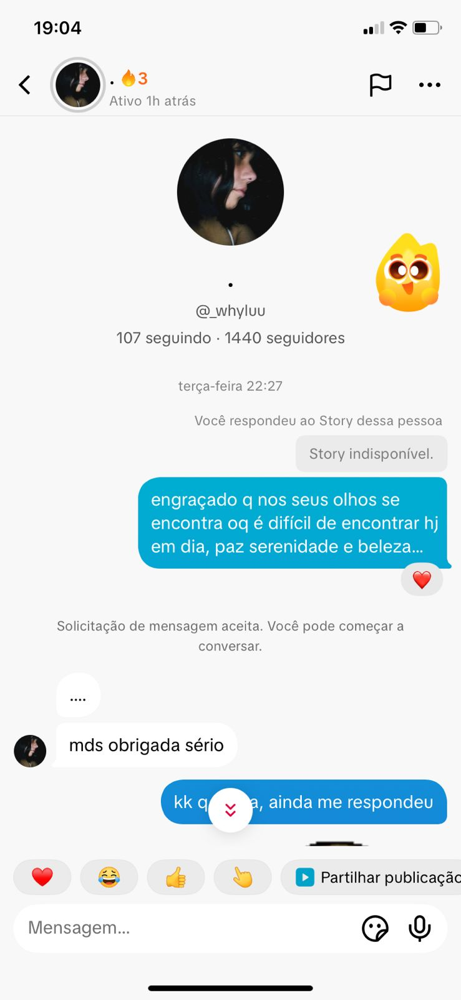
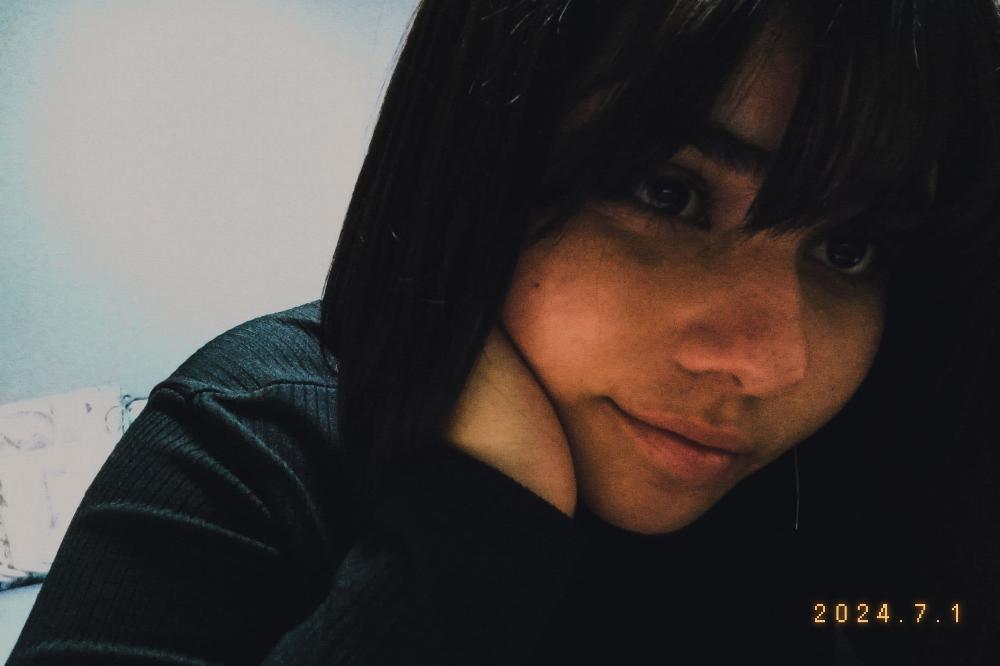
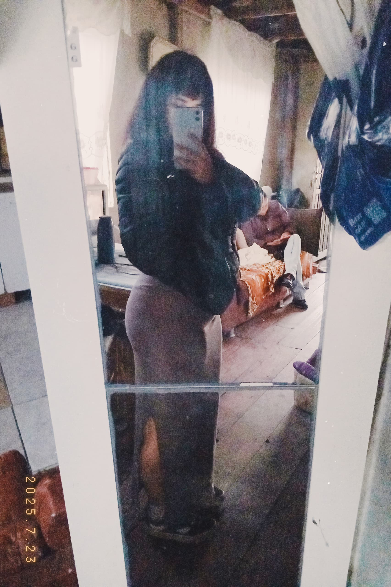
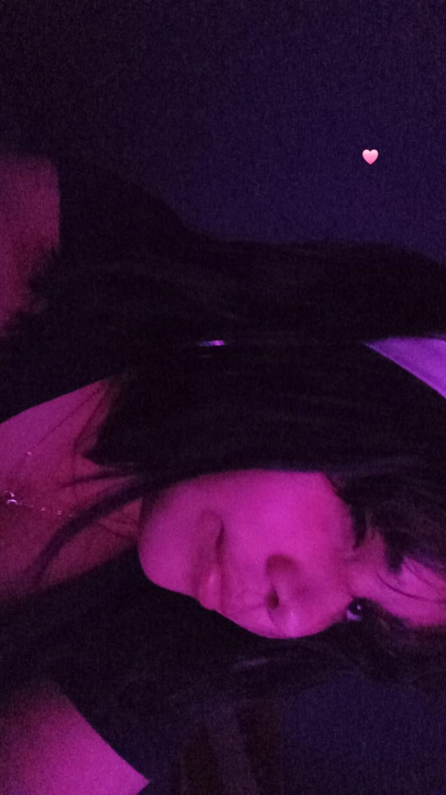

"Você é mais que beleza, é poesia viva em cada detalhe."

Desde o instante que te conheci, meu coração se aqueceu. Obrigado por existir e permitir que eu faça da tua vida um poema de amor. Eu te amo...

Toda vez que mergulho no brilho dos teus olhos, minha alma dança. Você é minha luz em meio a qualquer escuridão. Eu te amo garota, quero passar o resto da minha vida com tu...

Dos mil destinos que eu poderia sonhar, o teu abraço é o único lugar onde eu realmente quero morar.

Toda princesa merece um príncipe... mas você, meu amor, merece o universo inteiro dobrado aos teus pés.
Eu vou te esperar pra te ter nem que seja a última coisa que eu faça, pra te falar "Eu te AMO" todo dia.